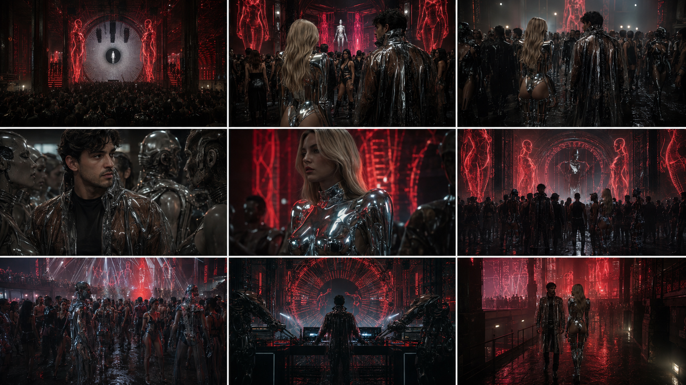

Release Archive / Berlin 2063
Alejandro MolinariTanzen Im Kreis
The opening chapter of Berlin 2063.
Release Archive / PV009
Release Object / Listen

Some cities move forward.
Berlin moves in circles.
Berlin has always been obsessed with the future. For more than a century, the city has attracted people carrying their own visions of tomorrow, while abandoned futures continue to shape everyday life.
Tanzen Im Kreis was written from inside that contradiction: a record about repetition as survival, where bodies return to the same rhythm, the same streets and the same unfinished future. Inside Berlin 2063, the circle is not nostalgia. It is a system.
Tracklist
- 01
- Tanzen Im Kreis (Original Mix)
- 02
- Tanzen Im Kreis (Molinari U-Bahn Mix)
- 03
- Tanzen Im Kreis (Cabizbajo Remix)
- 04
- Tanzen Im Kreis (Ëlorian Remix)
- 05
- Tanzen Im Kreis (Octave Remix)
Listen / SoundCloud
Open on SoundCloud ↗Watch the Film
Official Video / Berlin 2063
Video Note / Berlin 2063
A film transmission from Berlin 2063.
The official video follows Cabizbajo inside a transformed Berlin: metro spaces, concrete corridors and club fragments become part of the same archive. Cam appears as a figure from Berlin 2063, an anchor between our time and hers.
The characters are dressed through Parallel Vision’s digital material system. Cabizbajo wears Ether Shroud, a translucent performance layer from Fashion After Fabric. Cam moves through the film in a liquid-metal body system, extending the release into future materials, synthetic surfaces and wearable fiction.
Real footage of Berlin is treated as source material and transformed into a future city: not pure fantasy, but an altered memory of the present.
Archive Frames
Film / Character / Process
A compact visual record of the film world around Tanzen Im Kreis: metro spaces, Cabizbajo, performance fragments and the Ether Shroud look.



Archive Signals
Press / Reception
The release entered the Parallel Vision archive with premiere support, Beatport visibility and store-side signals across the Indie Dance / Minimal spectrum.